About the client
Fastbit is a cryptocurrency exchange platform. It strives to achieve ultimate cryptocurrency trading experience by providing users with state-of-the-art trading tools, innovative technology and unparalleled levels of customer service.
what was done
It was one of the hardest projects I've ever designed. I start working on it from an informational architecture, then I proceed to wireframes. We tested them with real traders to achieve the best user's satisfaction.
The platform is made in two modes: light and dark. Here I will show the dark one.
Buy. Sell. Get profit.
This page is well-designed to take all necessary actions in 2 screens on a small laptop. We made a lot of tests with real traders and got their approval on this interface.
Orders
This is quite a simple page with tabs to switch between open orders, order history and trade history.
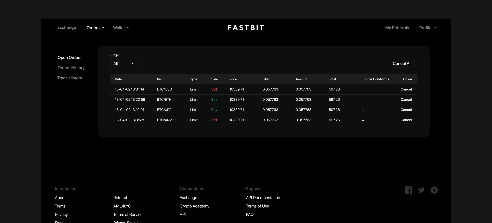 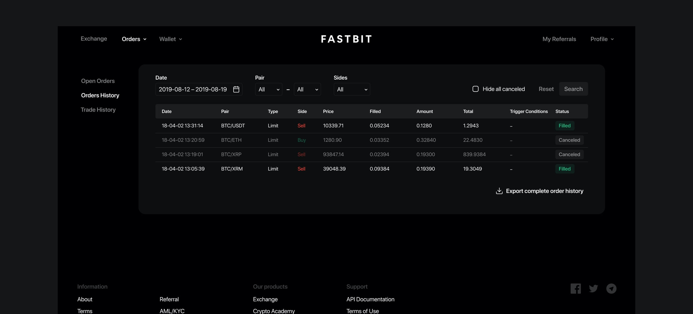Personal profile
The personal profile here works like a mini-dashboard with necessary info. It has a lot of tabs and functions inside them. Let me tell you about them in details.
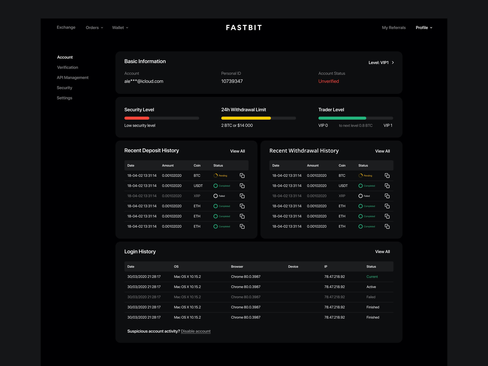Verification
I decided to make it simple: the user can be verified or not. No levels of verification and so on. Just fill in the fields, give us your photo and start making money.
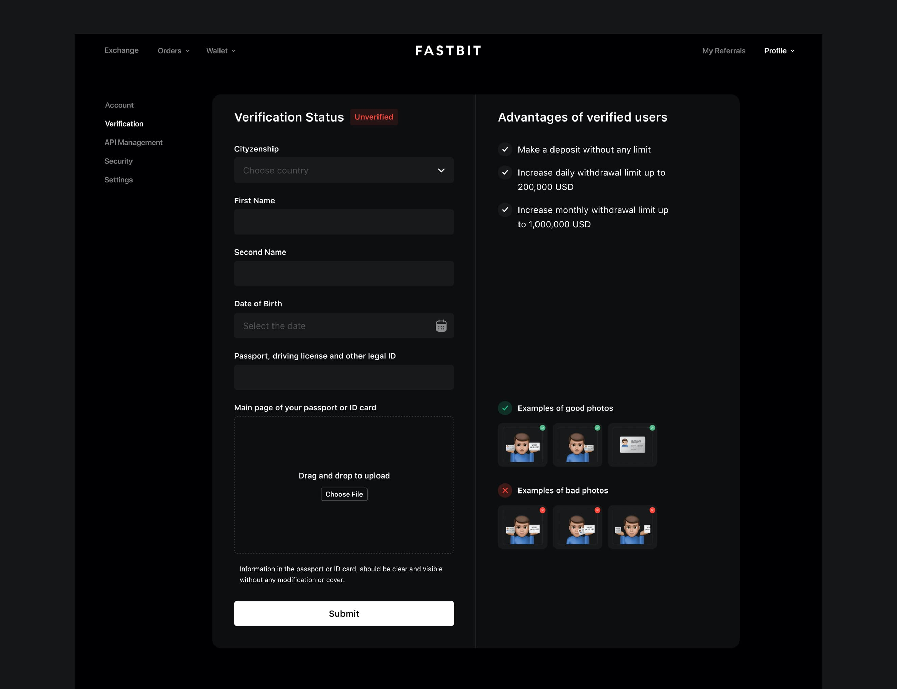API Management
The main goal for this page is to make it easy to set up a new IP and give its needed permission.
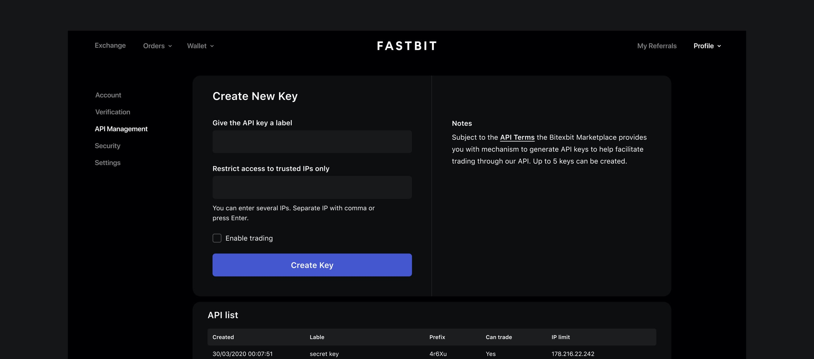Security settings
Security is a weak part of probably all platforms, but not this. I have designed a lot of ways to protect your account.
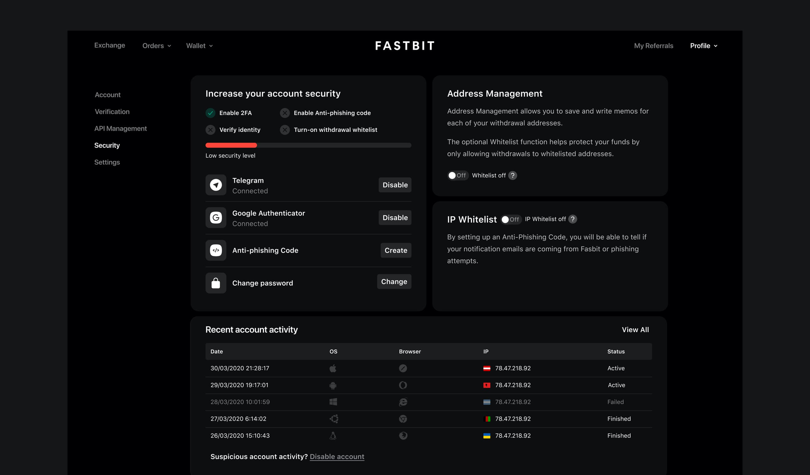Wallet
I made this page to show all accessible coins in a wallet. Here the user can search and hide small balances.
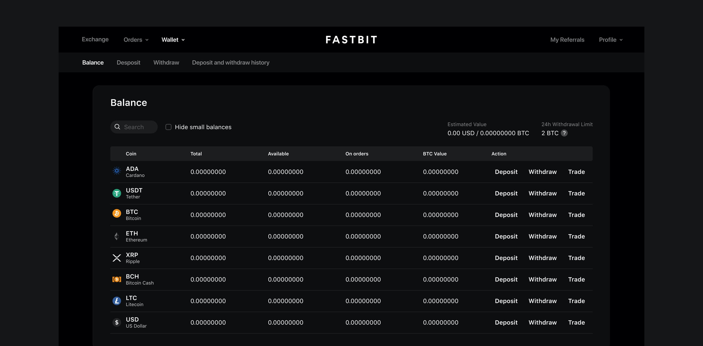Deposit and withdraw
On this page, the user can choose a coin to make a deposit, withdraw or explore recent history.
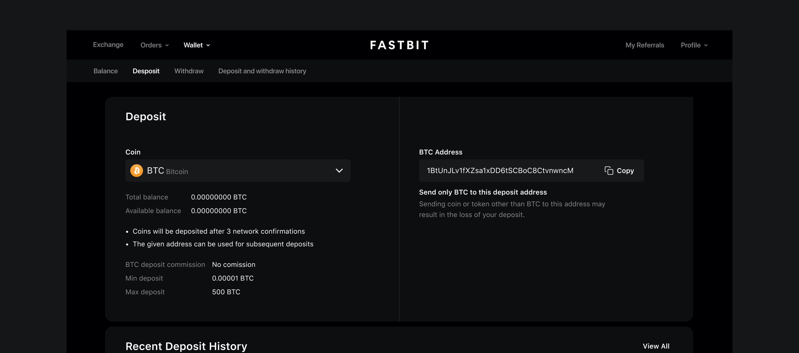 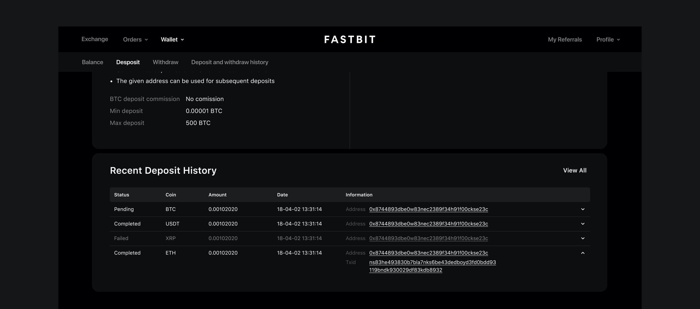 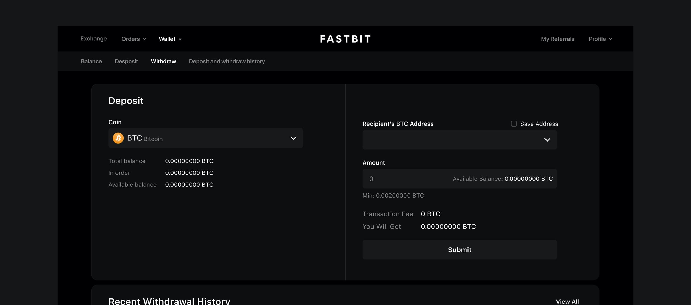 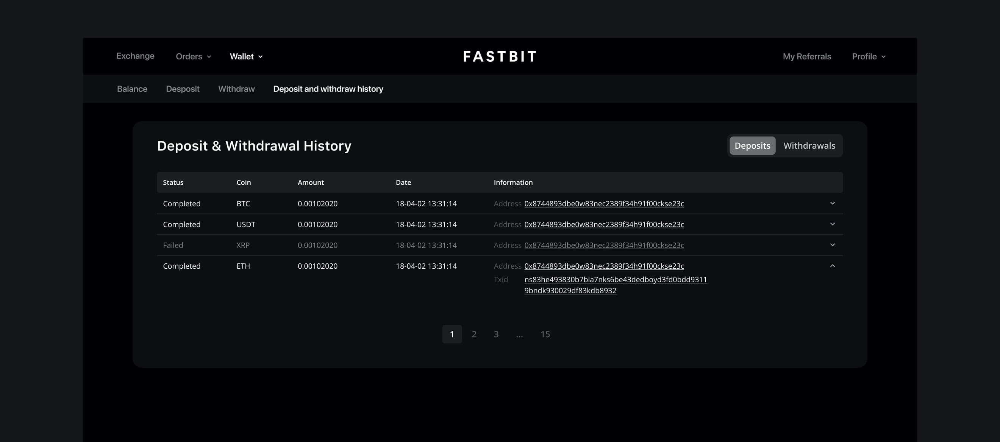